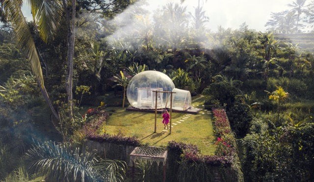

About Me
Hello! My first name is Hanh, or you can call me Hannah. I am from Vietnam. I have just arrived Canada on December 13th, 2023. I am studying Interactive Media Design at Algonquin College. And this is my assignment for the course Web Development I. After finishing this program, I would become a UX Designer to create the best websites.
I love to travel. This is my 2nd time to live in a foreign country. Previously, I had lived in NZ for a year in 2017. This time, my aim to extend my stay in Canada. I want to study and work here to embrace the new life in this huge country. This is a quote that I really like:
"Remember that happiness is a way of travel - not a destination" - Roy M. Goodman
Hobbies
- Traveling: I have traveled to 25 countries and numerous cities. Traveling everywhere has afforded me the opportunity to witness a plethora of beautiful natural landscapes, architectures, meet people from all walks of life, and indulge in various delicious cuisines. I will continue to pursue this passion for travel across Canada.
- Cooking: I enjoy cooking even though my dishes sometimes turn out less than perfect. However, I like the process of selecting ingredients at the market and cooking daily meals.
- Shopping: Whenever I have free time or feel bored, I go shopping. I love the excitement of acquiring new items, which always brings a sense of freshness to my life.